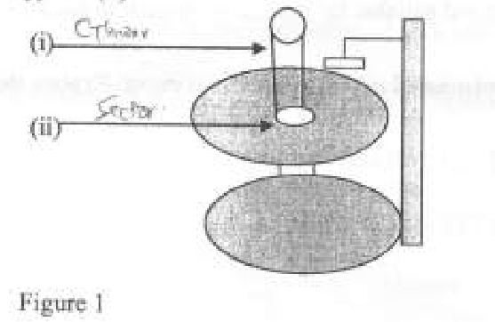

OPERATING SYSTEMS
Exam Code: 2920/105
Duration: 3 hours
Period: July 2019
Outline three disadvantages of serial file organization. Slow Access Speed: Records must be accessed sequentially, meaning to reach a specific record, you must traverse all preceding records. This makes access times slow, especially for large files. Inefficient for Frequent Updates: Updating or inserting records in the middle of a serial file is inefficient. It often requires rewriting the file, as there is no direct way to access and modify a specific record without affecting subsequent records. Not Suitable for Interactive Applications: Due to the slow access speed, serial file organization is not suitable for applications requiring quick retrieval of specific data, such as interactive systems or databases where users need immediate responses. Define the term port as used in I/O devices. A port, in the context of I/O devices, is an interface or a connection point through which a computer can communicate with external devices. It is a physical or logical channel that allows data to flow between the computer and peripherals like printers, keyboards, or network adapters. Access Control Matrix shows the types of access that each user has in a file system. Outline five types of access used in a file system. Read Access: Allows a user to view or copy the contents of a file. This is fundamental for accessing information but does not permit modification. Write Access: Enables a user to modify or delete the contents of a file. This is necessary for creating new files or altering existing ones. Execute Access: Permits a user to run a file, typically applicable to executable programs or scripts. Without this, a user cannot execute the file, even if they can read it. Append Access: Allows a user to add data to the end of a file without modifying existing content. This is useful for logging or data collection where historical data should be preserved. Delete Access: Grants a user the right to remove a file from the file system. This is a powerful permission that permanently removes the file. Outline two typical characteristics of cache memory. Speed: Cache memory is significantly faster than main memory (RAM). This speed advantage allows the CPU to access frequently used data and instructions more quickly, reducing the average memory access time. Limited Size: Cache memory is much smaller in size compared to main memory. This is because cache memory is expensive and designed to hold only the most frequently accessed data to maximize performance benefits. Differentiate between interrupt handler and interrupt vector as used in I/O communications. Interrupt Vector: An interrupt vector is a pointer or an address that points to the starting address of the interrupt handler routine in memory. When an interrupt occurs, the operating system uses the interrupt vector to quickly locate and jump to the appropriate interrupt handler. Interrupt Handler: An interrupt handler (also known as an interrupt service routine or ISR) is a software routine that is executed when a specific interrupt occurs. It is responsible for servicing the interrupt, which typically involves identifying the source of the interrupt and taking appropriate actions to handle the event, such as transferring data for I/O completion. Key Difference: The interrupt vector is essentially the address, whereas the interrupt handler is the actual routine of code that gets executed. The vector directs the system to the handler. With the aid of a diagram, describe a page table as used in operating systems. A page table is a data structure used by operating systems to implement virtual memory. It maps virtual addresses to physical addresses. Each process has its own page table. Diagram Description: Imagine a table with two columns: - The left column lists Virtual Page Numbers (VPNs). These are indices representing pages in the process's virtual address space. - The right column lists Physical Frame Numbers (PFNs) or pointers to physical memory frames. If a virtual page is in RAM, the PFN indicates where it is. If it's not in RAM (paged out to disk), the entry might indicate its location on disk or be marked as invalid. When the CPU generates a virtual address, the OS uses the VPN part of the address to index into the page table. The entry found in the page table provides the corresponding PFN. This PFN is then combined with the page offset (the lower bits of the virtual address) to form the physical address, which is used to access the actual memory location. If the page is not in physical memory (page fault), the page table entry will indicate this, triggering the OS to load the page from disk into RAM and update the page table before retrying the memory access. Explain the term compaction as used in memory fragmentation. Compaction, in the context of memory fragmentation, is a memory management technique used to reduce external fragmentation. It involves rearranging the processes in memory to be contiguous, thus consolidating the free memory space into larger, usable blocks. This effectively eliminates or reduces the scattered small fragments of free memory, making it possible to allocate larger blocks of memory to new processes. List four factors that should be considered when selecting random access memory (RAM) for a computer, other than cost. Memory Capacity (Size): The amount of RAM is crucial. Higher capacity allows for running more applications simultaneously and handling larger datasets. Insufficient RAM can lead to performance degradation due to excessive swapping. Memory Speed (Clock Rate): RAM speed, measured in MHz or GHz, affects how quickly data can be transferred to and from the CPU. Faster RAM improves system responsiveness and application performance, especially for memory-intensive tasks. Memory Latency (Timings): RAM latency refers to the delay in accessing data. Lower latency (CAS latency, etc.) means faster data access. Timings are typically represented as a series of numbers (e.g., CL16, CL18), with lower numbers indicating better performance. Memory Type and Compatibility (DDR Generation): Ensure the RAM type (e.g., DDR4, DDR5) is compatible with the motherboard. Different DDR generations have different speeds, voltages, and physical interfaces. Using incompatible RAM will prevent the system from booting. With the aid of a diagram, describe three states process model in a used in operating system. The three-state process model simplifies the lifecycle of a process in an operating system into three fundamental states: Running, Ready, and Waiting (or Blocked). Diagram Description: Imagine a state transition diagram with three states represented as circles: - Running: The process is currently being executed by the CPU. Only one process can be in the Running state on a single-core processor at any given time. - Ready: The process is ready to execute and is waiting for its turn to be assigned to the CPU. It has all the necessary resources but is simply waiting for the scheduler to select it. - Waiting/Blocked: The process is unable to execute because it is waiting for some event to occur, such as I/O completion, resource availability, or a signal. While waiting, the process is not eligible to use the CPU. Transitions: - Running to Ready: Occurs when the process's allocated time slice expires (time-out) in time-sharing systems, or when a higher-priority process becomes ready. - Running to Waiting: Occurs when the process requests an operation that requires waiting, such as I/O (e.g., reading from a file or network). - Waiting to Ready: Occurs when the event the process was waiting for completes (e.g., I/O operation finishes). The process becomes ready to run again. - Ready to Running: Occurs when the process scheduler selects a ready process to be executed by the CPU. This model provides a simplified view of process execution and management within an OS. Joan intends to design a job scheduling algorithm. Explain two objectives that should be achieved by the algorithm. Maximize Throughput: A primary objective is to maximize the number of jobs completed per unit of time. High throughput indicates efficient utilization of the system's resources, ensuring that the system is processing as many tasks as possible in a given period. This is crucial for overall system performance and productivity. Minimize Turnaround Time: Another key objective is to minimize the turnaround time for each job. Turnaround time is the total time taken from job submission to job completion. Reducing turnaround time improves user satisfaction as jobs are completed faster, leading to a more responsive and efficient system. This is important for both batch processing and interactive systems. It is recommended that users change their passwords to guarantee good file management. Outline four circumstances that necessitate this action. Compromised Password: If there is any indication that a password has been compromised (e.g., suspicion of unauthorized access, notification of a data breach), it is crucial to change the password immediately to prevent further unauthorized access and protect files. Regular Security Practice: As a proactive security measure, users should change their passwords periodically (e.g., every 30-90 days). Regular password changes reduce the window of opportunity for attackers if a password has been unknowingly compromised or is vulnerable to cracking over time. After Security Incidents: Following any security incident, such as a malware infection or phishing attack, changing passwords is a necessary step to secure accounts and prevent potential file system compromise or data loss. This helps to close any security loopholes that might have been exploited. Change in Role or Responsibility: When an employee changes roles within an organization or leaves the organization, changing passwords, especially for shared accounts or accounts with elevated privileges, is important. This ensures that access permissions are aligned with current responsibilities and prevents unauthorized access by former employees or individuals in different roles. Outline three resources required in process execution. CPU Time: Processes require CPU time to execute their instructions. The CPU is the central processing unit that performs computations and executes the program code of a process. The scheduler allocates CPU time to different processes to enable them to run. Memory: Processes need memory to store their program code, data, and execution context. Memory allocation is essential for a process to load its instructions and data into RAM and to manage its working set during execution. This includes both RAM for active execution and potentially secondary storage for virtual memory. I/O Resources: Many processes require Input/Output (I/O) resources to interact with the external environment. This can include access to devices like disk drives, network interfaces, printers, and user input devices. Processes need I/O resources to read data, write data, communicate over networks, and interact with users. Gerald was required to highlight principles of memory management in operating systems in a job interview. Outline four principles that he could have highlighted. Allocation and Deallocation: Memory management must efficiently allocate memory to processes when they start or request more memory and deallocate memory when processes terminate or release memory. This ensures that memory is used effectively and prevents memory leaks. Address Translation: Memory management is responsible for translating logical or virtual addresses used by processes into physical addresses in RAM. This translation allows for memory protection, virtual memory implementation, and efficient memory utilization. Protection: Memory management must provide memory protection to prevent processes from interfering with each other's memory space or the operating system's memory. This ensures system stability and security by isolating processes. Virtual Memory: Implementing virtual memory is a key principle. It allows processes to access more memory than physically available by using disk space as an extension of RAM. Virtual memory management includes techniques like paging and swapping to manage the movement of data between RAM and disk, enabling the execution of larger programs and multitasking. Paul investigated the disadvantages of a contiguous file allocation method. Outline five disadvantages that he could have established. External Fragmentation: A major disadvantage is external fragmentation. As files are allocated and deallocated, gaps of free space may be created between allocated file blocks. Over time, these gaps may become too small to allocate to new files, even if the total free space is sufficient, leading to wasted memory. Difficulty in File Growth: Contiguous allocation makes it difficult to grow files. If a file needs to expand, there might not be enough contiguous free space immediately following the file's current allocation. This can lead to needing to relocate the entire file to a larger contiguous block, which is inefficient. Wasted Space with Internal Fragmentation: Although primarily associated with non-contiguous methods, if files are allocated in fixed-size blocks, and a file does not perfectly fill the last block, internal fragmentation can occur within the last allocated block, wasting some space. Need for Pre-allocation or Dynamic Contiguous Allocation: To mitigate file growth issues, systems might require pre-allocation of a large contiguous space, which can lead to wasted space if the file does not grow as expected. Alternatively, dynamic contiguous allocation attempts can be complex and still prone to fragmentation. Compaction Overhead: To reduce external fragmentation, compaction might be needed, which involves moving files to consolidate free space. Compaction is a time-consuming operation that can disrupt system performance and is often not performed frequently. File recovery is a critical feature in a file system. Explain two functions of this feature. Data Restoration after System Failure: File recovery enables the restoration of data after system crashes, power outages, or hardware failures. By maintaining logs or backups, the file system can recover to a consistent state, minimizing data loss and ensuring that files are not corrupted due to unexpected interruptions. Undo Accidental Deletion or Modification: File recovery functions allow users to undo accidental file deletions or modifications. Features like the Recycle Bin or shadow copies provide a way to retrieve files that were mistakenly deleted or to revert files to a previous version, protecting against user errors and data loss. The principle goal of a multiprocessor system is to balance the load between processors. Explain two load balancing strategies used by these systems. Static Load Balancing: In static load balancing, the distribution of tasks among processors is determined at system design time or process creation time and remains fixed throughout the execution. This approach is simpler to implement but is less adaptive to runtime variations in processor load. Tasks might be assigned based on expected workload, but it does not dynamically adjust to changes during operation. Dynamic Load Balancing: Dynamic load balancing involves distributing tasks among processors at runtime, adjusting the distribution based on the current load of each processor. This approach is more flexible and can adapt to varying workloads and processor availability. It typically involves monitoring processor loads and migrating tasks from heavily loaded processors to lightly loaded ones to maintain balance and optimize performance. Examples include process migration and distributed scheduling algorithms. Explain the term virtual address space (VAS)as used in memory management. Virtual Address Space (VAS) is the set of virtual addresses that an operating system makes available to a process. It is the logical view of memory that a process sees, which is typically a contiguous range of addresses, regardless of the actual physical memory organization. The VAS is managed by the OS and is translated to physical addresses when the process accesses memory. Differentiate between static and dynamic linking as used in memory management. Static Linking: In static linking, all the necessary library routines required by a program are copied and linked directly into the executable file during the compilation and linking process. When the program is executed, all the code, including the library routines, is already present in the program's memory space. Dynamic Linking: In dynamic linking, the linking of library routines is postponed until runtime. Instead of copying library routines into the executable, only references or links to the shared libraries are included. When the program is executed and needs a library routine, the operating system loads the required shared library into memory if it's not already there and then links the program to the library at runtime. Key Differences: - Executable Size: Static linking results in larger executables because all library code is included, whereas dynamic linking produces smaller executables as library code is shared and loaded separately. - Memory Usage: Dynamic linking can save memory if multiple programs use the same library, as only one copy of the library is loaded in memory and shared. Static linking loads a separate copy of library code for each program. - Updates and Maintenance: Dynamic linking simplifies library updates and maintenance. Updating a shared library benefits all programs that use it without needing to recompile them. In static linking, programs must be recompiled to incorporate library updates. System timer is important in multiprogramming of systems. Explain two roles of the timer. Time Slicing for CPU Scheduling: The system timer is crucial for implementing time slicing in preemptive CPU scheduling algorithms, such as Round Robin. The timer generates periodic interrupts at regular intervals. These interrupts signal the operating system to regain control, allowing the scheduler to switch the CPU from the currently running process to another ready process. This ensures that no single process monopolizes the CPU and provides fairness in resource allocation, enabling effective multiprogramming. System Clock and Time Management: The system timer is fundamental for maintaining the system clock and managing time-related functions. It keeps track of the current time and date, which is essential for various OS operations, including process scheduling, time-stamping files, logging events, and scheduling tasks for future execution. The timer interrupts increment a counter that represents the system's notion of time, allowing the OS to provide time-based services and functionalities. Tony was required to configure buffering in an operating system that he was installing to a client. Explain three types of buffering he could use. Single Buffering: In single buffering, the operating system uses only one buffer in system memory for data transfer between I/O devices and the process. When data is read, it is placed into the buffer, and the process accesses data from this buffer. While the process is processing data from the buffer, the next data block cannot be read into the same buffer until the process is finished with the current block. This is simple to implement but can limit performance as I/O and processing are not fully concurrent. Double Buffering: Double buffering uses two buffers. While one buffer is being filled with data from an I/O device, the process can simultaneously access data from the other buffer. Once the process is done with the data in the first buffer and the second buffer is full, the roles of the buffers are switched. This allows for more overlap between I/O operations and processing, improving performance compared to single buffering. It reduces the waiting time for both the process and the I/O device. Circular Buffering (Multiple Buffering): Circular buffering, or multiple buffering, employs more than two buffers arranged in a circular queue. This method further enhances concurrency by allowing a sequence of I/O operations and processing to overlap. As one buffer is being processed, others can be filled or emptied. This is particularly useful for continuous data streams, such as in multimedia applications or network data handling, where a continuous flow of data needs to be processed without interruption. It maximizes throughput by keeping both the processor and I/O devices busy as much as possible. A lecturer described different categories of system calls in a lesson on operating systems. Outline four categories of system calls that he could have mentioned. Process Control: System calls in the process control category are related to process management. These include system calls for creating and terminating processes (e.g., `fork`, `exec`, `exit`, `wait`), managing process attributes (e.g., `getpid`, `setpriority`), and process synchronization and communication (e.g., `signal`, `pipe`, `shmem`). They enable the OS to manage the lifecycle and execution of processes. File Management: File management system calls deal with operations on files and directories. This category includes system calls for creating, deleting, opening, closing, reading, and writing files (e.g., `create`, `unlink`, `open`, `close`, `read`, `write`). They also include calls for managing file attributes (e.g., `chmod`, `chown`) and directory operations (e.g., `mkdir`, `rmdir`, `chdir`). These calls provide the interface for users and applications to interact with the file system. Device Management: Device management system calls are used to interact with hardware devices. These calls allow processes to request and release devices, as well as to read from and write to device registers. Examples include system calls for requesting I/O operations, controlling device parameters, and managing device drivers. They abstract the hardware details and provide a uniform interface for device access. Information Maintenance: System calls for information maintenance provide mechanisms to get system data and set system attributes. This category includes system calls to get the current time and date, get system configuration information (e.g., memory usage, CPU utilization), and set system parameters. They provide applications with access to system-level information and control over certain aspects of the system's behavior. Outline two benefits of a microkernel operating systems. Increased Reliability and Stability: By keeping only essential services in the kernel and running other services in user space as modules or servers, a microkernel architecture enhances system reliability. If a service in user space fails, it is less likely to crash the entire system because the kernel remains protected. This modular design improves fault isolation and system stability. Improved Security: The reduced size of the kernel and the separation of services into user space contribute to improved security. A smaller kernel means a smaller attack surface, reducing the potential vulnerabilities within the core OS. Additionally, running services in user space allows for better control over permissions and access, limiting the damage from security breaches in non-kernel components. Differentiate between blocking and non blocking O. Blocking I/O: In blocking I/O, when a process initiates an I/O operation, the process is blocked (suspended or put to sleep) until the I/O operation is complete. During this blocking time, the process cannot perform any other tasks and waits idly for the I/O operation to finish and for the data to become available. Once the I/O operation is completed, the process is resumed. Non-blocking I/O: In non-blocking I/O, when a process initiates an I/O operation, the operation is started, but the process is not blocked. Instead, the system call returns immediately, indicating whether the I/O operation could be started or not. The process can continue to execute other tasks while the I/O operation proceeds in the background. The process typically needs to periodically check the status of the I/O operation to determine when it is complete and the data is ready. Key Differences: - Process Waiting: Blocking I/O causes the process to wait (block) until the I/O is complete, while non-blocking I/O allows the process to continue execution without waiting. - CPU Utilization: Non-blocking I/O can lead to better CPU utilization as the process can perform other tasks while I/O is in progress. Blocking I/O may result in CPU idle time while processes are waiting for I/O. - Complexity: Non-blocking I/O is generally more complex to implement and manage as it requires the process to handle I/O completion events and manage the state of ongoing I/O operations. Blocking I/O is simpler from the process's perspective. Define the term segment table as used in operating systems. A segment table is a data structure used in memory management, specifically in segmentation. It is a table that maps logical addresses to physical addresses in memory. Each entry in the segment table corresponds to a segment of memory and contains information about that segment, such as its base address in physical memory and its limit (size). It is used by the operating system to manage segmented memory and perform address translation. Explain three limitations of a best-fit memory placement algorithm. External Fragmentation: Although best-fit attempts to minimize wasted space in each allocation, it can still lead to external fragmentation over time. By allocating the smallest available block that fits the process, it tends to leave behind many small, unusable fragments of free memory between allocated blocks. This can make it difficult to allocate larger processes later, even if the total free memory is sufficient but scattered in small chunks. Increased Overhead in Searching for Best Fit: The best-fit algorithm requires searching through the entire list of free memory blocks to find the smallest block that is large enough to satisfy the request. This search process can be time-consuming, especially when the list of free blocks is long. This overhead can degrade system performance, particularly with frequent memory allocations and deallocations. Potential for Small Fragment Generation: While aiming to minimize waste, best-fit can ironically lead to the creation of numerous very small free fragments. By always choosing the smallest suitable block, it often leaves behind tiny pieces of free memory that are too small to be useful for future allocations. These tiny fragments accumulate over time and contribute to external fragmentation, sometimes even more so than first-fit in certain scenarios. Patricia was required to describe advantages of distributed operating systems to a client. Describe three advantages that she could have mentioned to the client. Resource Sharing: A significant advantage of distributed operating systems is resource sharing. They allow users to share hardware resources (like printers, storage devices), software resources (like databases, applications), and data across a network of computers. This sharing reduces redundancy, lowers costs by avoiding duplication of resources, and enables collaborative work by providing access to shared resources from different locations. Improved Reliability and Fault Tolerance: Distributed systems offer improved reliability and fault tolerance. If one machine in the system fails, the overall system can continue to function, albeit possibly at a reduced capacity, because tasks can be redistributed to other machines. This redundancy and ability to withstand failures of individual components make distributed systems more robust and reliable than single-machine systems. The system can be designed to automatically recover from failures and maintain service availability. Enhanced Performance and Scalability: Distributed operating systems can provide enhanced performance and scalability. By distributing workload across multiple computers, they can achieve higher processing power and handle larger volumes of tasks than a single machine. Scalability is a key benefit; the system can be scaled by adding more machines to the network to handle increased load or to expand capabilities. This parallel processing and distributed architecture can lead to significant performance gains for computationally intensive or large-scale applications. Figure 1 shows a cross section of a hard disk. Explain the function of the parts labeled (i) and (ii).  Based on Figure 1: (i) Cylinder: A cylinder refers to a set of tracks of the same radius on all platter surfaces that are vertically aligned in a hard disk drive. All tracks at the same radial position constitute a cylinder. The function of a cylinder is to provide a way to access data across multiple platters without moving the read/write heads radially. This improves data access performance by reducing seek time when accessing logically contiguous data that spans across multiple platters. (ii) Sector: A sector is the smallest physical storage unit on a hard disk drive, typically 512 bytes or 4096 bytes (4KB) in size. Sectors are segments of tracks on the platter. The function of a sector is to store data. When the operating system reads or writes data to the hard drive, it does so in units of sectors. Sectors are the fundamental blocks of data organization and access on the disk. Explain two circumstances under which pre-emptive job scheduling algorithms would be used in operating systems. Time-Sharing Systems: Pre-emptive scheduling is essential in time-sharing operating systems. In these systems, multiple users interact with the computer concurrently, and each user expects timely responses. Pre-emption allows the OS to interrupt a running process after a certain time quantum and switch to another ready process. This time-slicing ensures fairness and prevents a single process from monopolizing the CPU, providing the illusion of simultaneous execution and responsiveness to all users. Priority-Based Systems: When implementing priority-based scheduling, pre-emption is crucial to ensure that higher-priority processes get preferential treatment. If a higher-priority process becomes ready to run while a lower-priority process is executing, pre-emptive scheduling allows the OS to immediately interrupt the lower-priority process and allocate the CPU to the higher-priority process. This ensures that critical or time-sensitive tasks are executed promptly, regardless of what other processes are currently running. I/O disk read operation involves several interrupts. Explain two typical interrupts that are likely to be used. I/O Request Interrupt (Initiation): When a process requests to read data from a disk, the operating system typically initiates the disk read operation. An I/O request interrupt might be generated to signal to the disk controller to start the read operation. This interrupt is essentially the initial signal sent from the OS to the hardware to begin the data retrieval process. It sets in motion the disk seeking and data transfer operations. I/O Completion Interrupt (Data Ready): Once the disk read operation is completed, and the requested data is ready to be transferred to main memory, the disk controller sends an I/O completion interrupt to the CPU. This interrupt signals to the OS that the data transfer is finished and the data is available. Upon receiving this interrupt, the OS can then handle the data, typically by transferring it from the disk controller's buffer to the process's memory space and resuming the process that initiated the read request. Describe two categories of I/O devices giving two examples in each case. Block Devices: Block devices transfer data in blocks of fixed sizes. Data is accessed in chunks, and each block has a unique address. They support random access, meaning data blocks can be accessed in any order. Examples of block devices include: - Hard Disk Drives (HDDs): Store data magnetically on platters and access it in blocks. - Solid State Drives (SSDs): Store data electronically in flash memory and also operate on blocks, offering faster access times. Character Devices: Character devices transfer data character by character, as a stream of bytes. They typically do not support random access and are accessed sequentially. Examples of character devices include: - Keyboard: Inputs characters one by one as keys are pressed. - Serial Ports (e.g., for serial communication): Transmit and receive data as a stream of characters, bit by bit. File sharing technologies have promoted the concept of global village. Explain two file sharing technologies that are used. Cloud Storage Services: Cloud storage services like Google Drive, Dropbox, and OneDrive allow users to store files on remote servers and share them with others over the internet. These services enable easy access to files from anywhere in the world with an internet connection, facilitating collaboration and information exchange across geographical boundaries. Users can share files with specific individuals or make them publicly accessible, promoting global information sharing and contributing to the concept of a global village. Peer-to-Peer (P2P) File Sharing: Peer-to-peer (P2P) file sharing technologies, such as BitTorrent, enable direct file sharing between users' computers without relying on a central server. P2P networks allow users to share files with a large number of people globally. While often associated with copyright infringement, P2P technology fundamentally facilitates decentralized file distribution and sharing on a global scale, connecting individuals directly and enabling the rapid dissemination of information and resources across the globe, thereby fostering the global village idea. Explain each of the following terms as used in operating systems: (i) shell; Shell: In operating systems, a shell is a command-line interpreter or user interface that allows users to interact with the operating system kernel. It takes commands from the user (typically text-based) and interprets them, instructing the OS kernel to perform specific actions, such as executing programs, managing files, and configuring system settings. The shell acts as an intermediary between the user and the OS, enabling command-based interaction. Explain each of the following terms as used in operating systems: (ii) thread. Thread: A thread, in the context of operating systems, is a lightweight unit of execution within a process. It's a single sequential flow of control within a program. Multiple threads can exist within one process and share the same memory space, code segment, and data segment. Threads enable concurrency within a process, allowing different parts of a program to execute in parallel or appear to execute in parallel, improving performance and responsiveness, especially in multi-core systems. Doreen discovered that some of her files in her computer were encrypted and her computer prompted her to pay a certain fee through Internet in order to decrypt her files. (i) Identify the most appropriate type of attack justifying your answer. The most appropriate type of attack is Ransomware. Doreen discovered that some of her files in her computer were encrypted and her computer prompted her to pay a certain fee through Internet in order to decrypt her files. (ii) Outline four possible causes for the attack identified in (i). Clicking on Malicious Links or Attachments: Ransomware can be distributed through phishing emails containing malicious links or attachments. If Doreen clicked on a deceptive link or opened an infected attachment, it could have initiated the ransomware download and execution. Visiting Compromised Websites: Malvertising or compromised websites can host ransomware. If Doreen visited a website that was infected or serving malicious ads, her computer could have been infected with ransomware through a drive-by download, without requiring her to click on anything explicitly. Software Vulnerabilities: Unpatched software vulnerabilities in the operating system or applications can be exploited by ransomware. If Doreen's system had outdated or vulnerable software, attackers could have used exploit kits to install ransomware onto her computer. Drive-by Downloads from Infected Networks: In some cases, ransomware can spread through infected networks. If Doreen's computer was connected to a network that was already compromised, the ransomware could have spread to her system through network shares or vulnerabilities in network protocols, leading to infection without direct user action. Explain the term spatial locality as used in memory management. Spatial Locality, in memory management, refers to the tendency of a processor to access memory locations that are physically close to each other in memory. If a program accesses a particular memory location, it is likely to access nearby memory locations in the near future. This principle is exploited by cache memory systems to improve performance by pre-fetching blocks of memory around recently accessed locations. Differentiate between long-term scheduler and short-term scheduler. Long-Term Scheduler (Job Scheduler): The long-term scheduler, also known as the job scheduler, controls the degree of multiprogramming by selecting processes from a job pool (often from disk) and loading them into memory for execution. It decides which processes are admitted to the ready queue. The long-term scheduler is invoked infrequently, typically when a process finishes execution, and aims to balance the mix of processes in memory (e.g., CPU-bound vs. I/O-bound). Short-Term Scheduler (CPU Scheduler): The short-term scheduler, or CPU scheduler, selects from the ready queue the process that should be executed next by the CPU and allocates the CPU to it. It is invoked very frequently (milliseconds) whenever an event occurs that may lead to process switching (e.g., time slice expiration, I/O completion). The short-term scheduler focuses on maximizing CPU utilization and meeting process deadlines. Key Differences: Memory fragmentation is not popular with the modern operating systems. Explain two limitations that could be aiding this trend. Inefficient Memory Utilization: Memory fragmentation, both internal and external, leads to inefficient use of available memory. External fragmentation results in scattered small blocks of free memory that are too small to satisfy larger allocation requests, even if the total free memory is substantial. Internal fragmentation wastes memory within allocated blocks when the allocated block size is larger than the requested memory. This inefficient utilization reduces the effective capacity of RAM, limiting the number of processes that can run concurrently and degrading overall system performance. Performance Degradation: Fragmentation can cause performance degradation. In cases of external fragmentation, the operating system may need to perform compaction (memory defragmentation) to consolidate free memory, which is a time-consuming operation that can pause system operations. Furthermore, when memory is highly fragmented, the system may be forced to resort to swapping or paging more frequently to accommodate new processes or data, increasing disk I/O and slowing down system responsiveness. The overhead of managing fragmented memory and the performance penalties associated with it make it undesirable in modern operating systems. Outline two functions of device drivers in I/O communication. Abstraction of Hardware Differences: Device drivers abstract the hardware-specific details of I/O devices from the operating system and applications. They provide a uniform interface for the OS to interact with diverse hardware, hiding the complexities and variations in device controllers, communication protocols, and device-specific commands. This abstraction allows the OS and applications to work with devices in a generic way, regardless of the underlying hardware implementation. Handling I/O Operations and Interrupts: Device drivers are responsible for handling I/O operations and interrupts for their respective devices. They manage the communication between the OS and the hardware device, including sending commands to the device, transferring data, and managing data buffers. Drivers also handle interrupts generated by devices, responding to device events such as data arrival, device status changes, and error conditions. They ensure that I/O operations are executed correctly and efficiently, and that device events are properly processed by the OS. Outline four conditions necessary for deadlock in computing. Mutual Exclusion: Mutual exclusion is a condition where at least one resource must be held in a non-sharable mode. Only one process can use the resource at any given time. If another process requests that resource, it must wait until the resource is released. This condition is essential for deadlock as it prevents simultaneous access to critical resources. Hold and Wait: The hold and wait condition occurs when a process is holding at least one resource and is waiting to acquire additional resources held by other processes. The process continues to hold its already allocated resources while requesting new ones, which can lead to a deadlock situation. No Preemption: No preemption means that resources cannot be forcibly taken away from a process holding them. Resources can only be released voluntarily by the process that is holding them, after that process has completed its task. If preemption were possible, the OS could take resources away from a process, breaking the deadlock cycle. Circular Wait: Circular wait is a condition where there exists a set of waiting processes {P0, P1, ..., Pn} such that P0 is waiting for a resource held by P1, P1 is waiting for a resource held by P2, ..., and Pn is waiting for a resource held by P0. This creates a circular dependency, where each process in the cycle is waiting for a resource held by the next process in the cycle, and none can proceed. Differentiate between high level and low level formatting as used in storage disks. Low-Level Formatting (Physical Formatting): Low-level formatting, also known as physical formatting, is the initial process that prepares a hard disk or other storage medium for data storage. It creates the physical structure of the disk, including tracks and sectors. It defines the basic layout of the storage medium at the hardware level. This process is usually performed at the factory and is rarely done by end-users. High-Level Formatting (Logical Formatting): High-level formatting is performed after low-level formatting. It sets up the file system structure on the disk partition. This includes creating the file allocation table or other file system metadata, the root directory, and making the partition ready for storing files and directories. High-level formatting is typically performed by the operating system when partitioning or preparing a drive for use. Key Differences: For each of the following scenario, identify the appropriate type of computer memory: (i) highly volatile; RAM (Random Access Memory) For each of the following scenario, identify the appropriate type of computer memory: (ii) stores firmware; ROM (Read-Only Memory) or Flash Memory (EEPROM) For each of the following scenario, identify the appropriate type of computer memory: (iii) parts of hard disk addressed as computer memory; Virtual Memory (Swap Space/Page File) For each of the following scenario, identify the appropriate type of computer memory: (iv) very short access time and suitable for storage of frequently used instructions by CPU. Cache Memory Creation of processes is a fundamental role of operating systems. Explain three ways of creating the processes. System Initialization (Booting): Some processes are created during system initialization or booting. When the operating system starts up, it automatically creates several essential system processes. These processes are crucial for OS functionality, such as process management, memory management, device management, and user interface services. Examples include init or systemd processes on Linux, which are the first processes started by the kernel and responsible for launching other system services. Process Creation System Calls (e.g., fork): Processes can be created programmatically using system calls like `fork` (in Unix-like systems) or `CreateProcess` (in Windows). When a running process executes a fork system call, the OS creates a nearly identical copy of the process (child process). The child process inherits many attributes from the parent process but gets a new process ID and its own memory space. System calls provide a direct way for existing processes to initiate the creation of new processes, often to perform concurrent tasks or execute new programs. User Requests (Command Line or GUI): Processes are frequently created in response to user requests. When a user types a command in a shell or clicks an application icon in a graphical user interface (GUI), the OS interprets this action as a request to start a new program. The OS then creates a new process to execute the requested program. This is the most common way users interact with the OS to launch applications and perform tasks. The shell or GUI acts as an interface to translate user actions into process creation requests to the OS.1. (a) (3 marks)
Answer
1. (b) (i) (2 marks)
Answer
1. (b) (ii) (5 marks)
Answer
1. (c) (i) (2 marks)
Answer
1. (c) (ii) (4 marks)
Answer
1. (d) (4 marks)
Answer
2. (a) (2 marks)
Answer
2. (b) (4 marks)
Answer
2. (c) (6 marks)
Answer
2. (d) (i) (4 marks)
Answer
2. (d) (ii) (4marks)
Answer
3. (a) (i) (3 marks)
Answer
3. (a) (ii) (4 marks)
Answer
3. (b) (5 marks)
Answer
3. (c) (4 marks)
Answer
3. (d) (4 marks)
Answer
4. (a) (i) (2 marks)
Answer
4. (a) (ii) (4 marks)
Answer
4. (b) (4 marks)
Answer
4. (c) (6 marks)
Answer
4. (d) (4 marks)
Answer
5. (a) (i) (2 marks)
Answer
5. (a) (ii) (4 marks)
Answer
5. (b) (i) (2 marks)
Answer
5. (b) (ii) (6 marks)
Answer
5. (c) (6 marks)
Answer
6. (a) (4 marks)
Answer
6. (b) (4 marks)
Answer
6. (c) (4 marks)
Answer
6. (d) (i) (4 marks)
Answer
6. (d) (ii) (4 marks)
Answer
7. (a) (i) (2 marks)
Answer
7. (a) (ii) (2 marks)
Answer
7. (b) (i) (2 mark)
Answer
7. (b) (ii) (4 marks)
Answer
7. (c) (i) (2 marks)
Answer
7. (c) (ii) (4 marks)
Answer
Feature
Long-Term Scheduler
Short-Term Scheduler
Frequency of Invocation
Less frequent (infrequent)
Very frequent (milliseconds)
Primary Goal
Control degree of multiprogramming, balance process mix
Maximize CPU utilization, select process for CPU execution
Decision
Which processes to admit to ready queue from job pool
Which ready process gets the CPU next
7. (d) (4 marks)
Answer
8. (a) (i) (2 marks)
Answer
8. (a) (ii) (4 marks)
Answer
8. (b) (4 marks)
Answer
Feature
Low-Level Formatting
High-Level Formatting
Level of Operation
Physical/Hardware level
Logical/Software level
Purpose
Create tracks and sectors, physical structure
Create file system, logical structure
Frequency
Rarely done outside factory, done once
Done when partitioning or installing OS, can be repeated
Data Recovery after Formatting
Very difficult to recover data
Data recovery may be possible
8. (c) (1 mark)
Answer
8. (c) (1 mark)
Answer
8. (c) (1 mark)
Answer
8. (c) (1 mark)
Answer
8. (d) (6 marks)
Answer